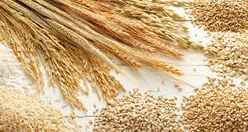
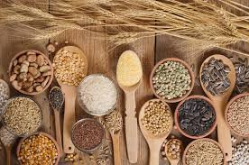
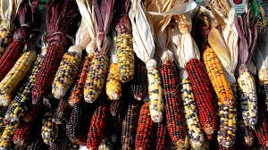

Manger bien
Vivez sain avec
LOCALEAT
En tant qu'entreprise locale, notre engagement envers la qualité,
le service et notre communauté est ce qui nous distingue des
autres entreprises de céréales. Si vous cherchez des céréales de
qualité supérieure, des conseils
d'experts et un service personnalisé,
venez nous rendre visite chez [LOCAL'EAT] !
Achetez des produits en base de céreals local ches LOCAL'EAT.
LOCAL'EAT vous propose une large sélection de céréales délicieuses et saines, directement issues de nos producteurs locaux.
Nous croyons fermement en la qualité de nos
produits, car nous savons que ce que vous mangez a un impact sur votre bien-être.

cereale

cereale
cereale

cereale